1032C43 timing belt tensioner mount - r r with timing belt removed
- Path
- Procedures > 10 ENGINE > 1032 TIMING SYSTEM > 1032C timing system tensioners > 1032C43 timing belt tensioner mount - r r with timing belt removed
- Kind
- repair procedure (removal / refitting; the operation number is the code)
- Applies to
- all engines; all production periods
- Interactive page
- https://sloeber94.github.io/elrnDB-fDbl/en/#/2584447
Applies to: all engines; all production periods
 Removing
Removing
 Refitting
RefittingPosition a hydraulic jack under the motor to support it.
Fit the timing side engine support by screwing in the nuts securing it to the bodyshell and the engine.
1. Undo the fixing bolts (1a) and remove the timing belt (1b) rear shield.
2. Undo the fixing bolt (2a) and remove the timing drive belt fixed tensioner (2b).
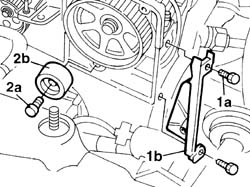
Applies to: all engines; all production periods
Removing
RefittingProceed with the removal 1032C30 fixed timing system tensioner - r + r with timing belt removed .
Proceed with the removal 1092A10 Crankshaft services PULLEY - R.R. .
1. Undo the bolt (1a) and remove the single drive belt tensioner (1b).
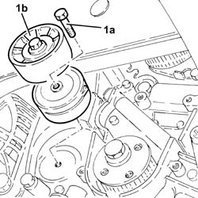
Applies to: all engines; all production periods
1. Undo the top retaining bolt joining the alternator to the reinforcement bracket.
Raise the lift.
2. Undo the lower engine block retaining bolt.
3. Remove the rear alternator reinforcement bracket.
3. Undo the lower alternator retaining bolt.
Move the alternator aside by releasing from the mount.
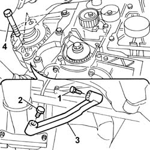
Applies to: all engines; all production periods
Proceed with the removal 1076B50 exhaust pipe attachment to engine - r + r .
Proceed with the removal 5530A10 alternator - r+r .
1. Undo the bolts (1a) and remove the power steering pump pulley (1b).
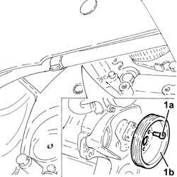
Applies to: all engines; all production periods
1. Undo the bolt (1a) and remove the automatic tensioning device (1b).
2. Unscrew the retaining bolts
3. Remove the power steering pump pulley.
4. Undo the fixing bolts (3a) and move the power steering pump (3b) backwards, releasing it from the support.
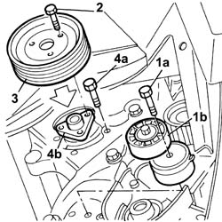
Applies to: all engines; all production periods
1. Undo the bolts (1a) and move the power assisted steering pump (1b) backward releasing it from the mounting without disconnecting the pipes.
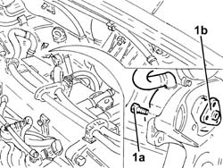
Applies to: all engines; all production periods
1. Undo bolt (1a) and remove fixed auxiliary drivebelt tensioner (1b).
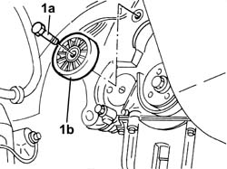
Applies to: all engines; all production periods
1. Undo the upper bolt fixing the side protective timing cover.
2. Undo the bolts (2a) and remove the timing tensioners mounting (2b) complete with timing moving tensioner (2c) and protective side timing cover (2d).
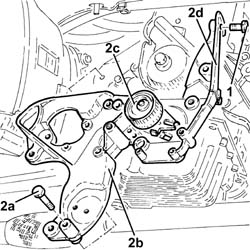
Applies to: all engines; all production periods
1. Unscrew the retaining bolts
2. Remove the various components drive belt tensioner support.
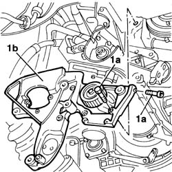
Applies to: all engines; all production periods
Refitting
Removing1. Place the timing tensioners mounting (1a) complete with timing moving tensinoer (1b) and timing side protective cover (1c) back in its housing and secure it tightening the bolts (1d) to the recommended torque.
 | Fastening | Component | Ø | Value (daNm) |
|---|---|---|---|---|
1d | Bolt | TIMING BELT TENSIONER SUPPORT | M8 | 2.3 ÷ 2.8 |
| Fastening | Component | Ø | Value (daNm) |
|---|---|---|---|---|
1d | Bolt | TIMING BELT TENSIONER SUPPORT | M10 | 4.5 ÷ 5.5 |
2. Tighten the upper bolt fixing the side timing protective cover.
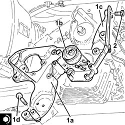
Applies to: all engines; all production periods
Refitting
RemovingPosition the various components drive belt tensioner support.
Tighten the fixing bolts to torque.
| Fastening | Component | Ø | Value (daNm) |
|---|---|---|---|---|
- | Bolt | ADD. TENSIONER FOR VARIOUS COMPONENTS TIMING BELT | M8 | 2.5 |
| Fastening | Component | Ø | Value (daNm) |
|---|---|---|---|---|
- | Bolt | ADD. TENSIONER FOR VARIOUS COMPONENTS TIMING BELT | M10 x 1.25 | 5 |
Tighten the engine drive belt fixed tensioner retaining bolt without tightening.
Fit the power steering pump and tighten the retaining bolts to torque.
| Fastening | Component | Ø | Value (daNm) |
|---|---|---|---|---|
- | Bolt | POWER STEERING PUMP | M8 | 2.5 |
Fit the power steering pump pulley and tighten the retaining bolts.
| Fastening | Component | Ø | Value (daNm) |
|---|---|---|---|---|
- | Bolt | POWER STEERING PUMP DRIVE PULLEY | M8 | 2.5 |
Position the auxiliary belt tensioner and tighten the fixing bolt to torque.
| Fastening | Component | Ø | Value (daNm) |
|---|---|---|---|---|
- | Bolt | SINGLE SERVICES MOBILE BELT TENSIONER | M8 | 2.5 |
Fit the alternator to the mount.
Fit the rear alternator mounting bracket.
Tighten the bolts fixing the bracket to the cylinder block and alternator.
Tighten the bolts fixing the alternator to torque.
| Fastening | Component | Ø | Value (daNm) |
|---|---|---|---|---|
- | Nut | ALTERNATOR ASSEMBLY | M10 x 1.25 | 5 |
| Fastening | Component | Ø | Value (daNm) |
|---|---|---|---|---|
- | Nut | ALTERNATOR ASSEMBLY | M12 x 1.25 | 7 |
Fit the fixed tensioner for the timing belt and tighten the retaining bolt to torque.
| Fastening | Component | Ø | Value (daNm) |
|---|---|---|---|---|
- | Bolt | FIXED TENSIONER | M8 | 2.5 |
Position the timing belt rear shield and tighten the fixing bolts.
Position a hydraulic jack beneath the engine to support it.
Remove the timing end engine mount by undoing the nuts securing it to the body and engine.
Applies to: all engines; all production periods
1. Place the power assisted steering pump (1a) back in its housing and fix it tightening the bolts (1b) to the recommended torque.
| Fastening | Component | Ø | Value (daNm) |
|---|---|---|---|---|
1b | Bolt | POWER STEERING PUMP | M8 | (Support side) 2.3 ÷ 2.8 |
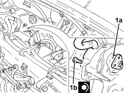
Applies to: all engines; all production periods
1. Place the power assisted steering pump pulley (1a) back in its housing and fix it tightening the bolts (1b) to the recommended torque.
| Fastening | Component | Ø | Value (daNm) |
|---|---|---|---|---|
1b | Bolt | POWER STEERING PUMP DRIVE PULLEY | M8 | (Power assisted steering pump side) 2.3 ÷ 2.8 |
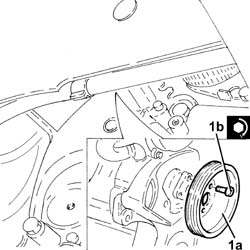
Applies to: all engines; all production periods
Proceed with the refitting 5530A10 alternator - r+r .
Proceed with the refitting 1076B50 exhaust pipe attachment to engine - r + r .
1. Place the engine components single drive belt moving tensioner (1a) back in its housing and fix it tightening the bolts (1b) to the recommended torque.
| Fastening | Component | Ø | Value (daNm) |
|---|---|---|---|---|
1b | Bolt | SINGLE SERVICES MOBILE BELT TENSIONER | M8 | 2.3 ÷ 2.8 |
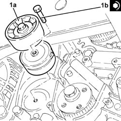
Applies to: all engines; all production periods
Proceed with the refitting 1092A10 Crankshaft services PULLEY - R.R. .
Proceed with the refitting 1032C30 fixed timing system tensioner - r + r with timing belt removed .
Topics linked from this page (4)
- 1032C30 fixed timing system tensioner - r + r with timing belt removed
- 1076B50 exhaust pipe attachment to engine - r + r
- 1092A10 Crankshaft services PULLEY - R.R.
- 5530A10 alternator - r+r